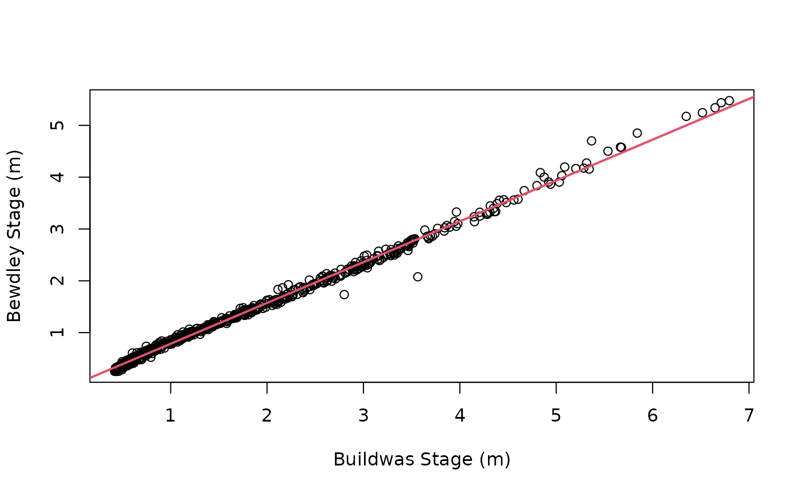

A means to pair up hydrological events by nearest match time
Arguments
- upstream
Peak values and date time of upstream site
- downstream
Peak values and date time of downstream site
- timeMin
Used to filter the time difference in paired peaks, set as 0
- timeMax
Used to filter the time difference in paired peaks, set as 1000
Examples
bewdS <- loadAPI(ID = '2001', 'level', 900, 'instantaneous',
datapoints = 'range',
from = '2008-10-01 09:00')
#> ℹ Compiling parameters for raw download
#> ✔ Compiling parameters for raw download [941ms]
#>
#> ℹ Downloading raw data
#> ✔ Downloading raw data [18.7s]
#>
#> ℹ Collating metadata
#> ✔ Collating metadata [978ms]
#>
#> ℹ Exporting data to HydroImport container
#> ✔ Exporting data to HydroImport container [12ms]
#>
bewdS$hydroYearDay()
#> ℹ Calculating hydrological year and day
#> ✔ Calculating hydrological year and day [2.4s]
#>
buildS <- loadAPI(ID = '2134', 'level', 900, 'instantaneous',
datapoints = 'range',
from = '2008-10-01 09:00')
#> ℹ Compiling parameters for raw download
#> ✔ Compiling parameters for raw download [861ms]
#>
#> ℹ Downloading raw data
#> ✔ Downloading raw data [22.8s]
#>
#> ℹ Collating metadata
#> ✔ Collating metadata [1s]
#>
#> ℹ Exporting data to HydroImport container
#> ✔ Exporting data to HydroImport container [12ms]
#>
buildS$hydroYearDay()
#> ℹ Calculating hydrological year and day
#> ✔ Calculating hydrological year and day [2.4s]
#>
bewdPS <- findPeaks(bewdS, levels = 100)
buildPS <- findPeaks(buildS, levels = 100)
pairedStage <- linkEvents(upstream = buildPS,
downstream = bewdPS)
#> Upstream peaks: 671
#> Downstream peaks: 771
#> Paired peaks: 526
#> Omitted peaks: 100
pairedStage
#> Key: <dateTime>
#> dateTime value downstreamTime i.value upstreamTime
#> <POSc> <num> <POSc> <num> <POSc>
#> 1: 2008-10-02 10:15:00 1.345 2008-10-02 17:15:00 1.756 2008-10-02 10:15:00
#> 2: 2008-10-08 05:00:00 3.141 2008-10-08 10:30:00 4.152 2008-10-08 05:00:00
#> 3: 2008-10-16 15:30:00 1.412 2008-10-16 21:45:00 1.845 2008-10-16 15:30:00
#> 4: 2008-10-22 00:00:00 1.586 2008-10-22 10:30:00 2.104 2008-10-22 00:00:00
#> 5: 2008-10-25 08:15:00 1.548 2008-10-25 16:15:00 2.104 2008-10-25 08:15:00
#> ---
#> 522: 2024-02-11 16:00:00 3.564 2024-02-11 22:30:00 4.456 2024-02-11 16:00:00
#> 523: 2024-02-15 20:00:00 2.495 2024-02-16 05:00:00 3.035 2024-02-15 20:00:00
#> 524: 2024-02-20 11:45:00 3.012 2024-02-20 13:15:00 3.769 2024-02-20 11:45:00
#> 525: 2024-02-24 19:30:00 3.555 2024-02-25 02:15:00 4.411 2024-02-24 19:30:00
#> 526: 2024-03-22 00:00:00 1.806 2024-03-22 03:30:00 2.257 2024-03-22 00:00:00
#> diff
#> <difftime>
#> 1: 420 mins
#> 2: 330 mins
#> 3: 375 mins
#> 4: 630 mins
#> 5: 480 mins
#> ---
#> 522: 390 mins
#> 523: 540 mins
#> 524: 90 mins
#> 525: 405 mins
#> 526: 210 mins
## Plot the paired events
plot(pairedStage$value ~ pairedStage$`i.value`,
xlab = 'Buildwas Stage (m)',
ylab = "Bewdley Stage (m)")
model <- lm(pairedStage$value ~ pairedStage$`i.value`)
abline(model, lwd = 2, col = 2)
